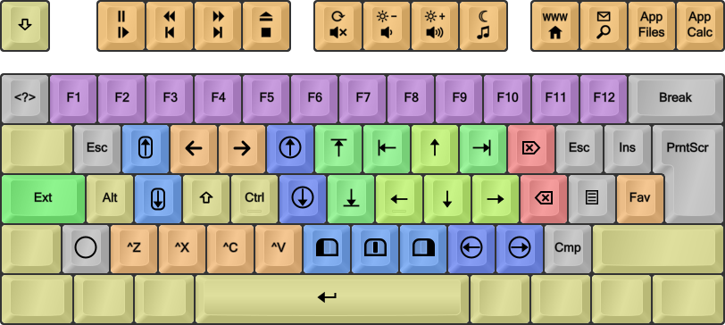
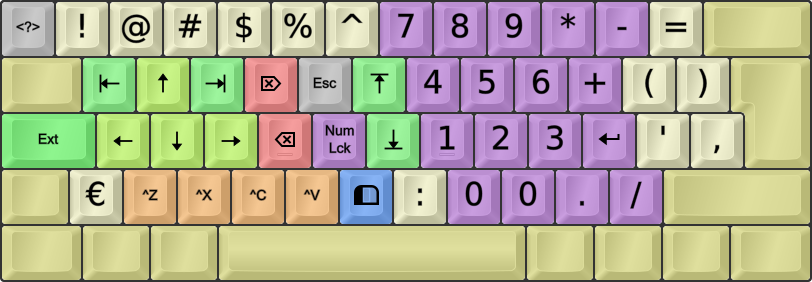

Character/Key Mapping Layers
COLEMAK[eD] - EDITION DREYMAR
See the Colemak[eD] page if you're interested.
This is my own preferred AltGr mapping layers (modifier lv3-4 in Linux terminology) for the Colemak layout. I've tried to add much functionality while keeping it intuitive. In particular, I want to be able to write different scripts and tech/maths symbols. Since the start, there's been some minor tweaks based on my experience and forum feedback, but it's been stable for a long time now.
See my various layout files for comments and explanations, in addition to these design goals:
- Keeping level 1-2 of Colemak intact! This is what I think of as the Colemak layout per se.
- Dead keys easily accessible as unshifted AltGr+symbol keys; common ones in good positions.
- Added letters/quotes allowing many of the major latin scripts to be written correctly.
- Added symbols/glyphs similar to, e.g., Mac ones - allowing common math/tech/etc typing.
- The positions of added letters and symbols should as far as possible be easy to remember!

The Colemak [edition DreymaR] layout, using different lv3-4 mappings from Shai's default Colemak.
Shown on an ANSI keyboard with dead key emphasis (golden) and "FingerShui" color-coded proposed fingering.
Colemak-CAW[eD], using the Curl(DH)Angle-ISO and Wide(/) ergonomic mods like I do (see the next post).
HowTo:
- You can select the various layouts for different locales (see below) that all have my Colemak[eD] mappings, in the standard layout chooser
- I often type 'colemak' or the language name into the search field to narrow down the search
- Alternatively, you may use a 'setxkbmap' terminal command such as 'setxkbmap -layout "us(cmk_ed_us)" -v 9'
- Or see below about my setxkb script for changing XKB settings!
EXTEND LAYERS AND THE CAPS SWITCH MODIFIER
This is my favorite mod next to Colemak itself! The ability to navigate and edit from the home position and its immediate surroundings is extremely powerful. It's like having part of the power of advanced editors like Vim ready in all situations. Plus a fully functional multimedia keyboard without sacrificing compactness. And more.
For more info and tricks, see my Extend Extra Extreme page.
A symbolic chart of my Extend mappings (lvl1 only). Greens, navigation; blue/circled, mousing; orange, multimedia; gray, system/misc.
A more explicit chart from my XKB Extend source file:Spoiler:
These keys are modified/transposed by holding down the 'extend key' (CapsLock by default):
+------+------+------+------+------+------+------+------+------+------+------+------+------+
|Esc + |F1 <> |F2 << |F3 >> |F4 <> |F5 <> |F6 << |F7 >> |F8 <> |F9 <> |F10<> |F11<> |F12<> |
| | Pause| Rew | Fwd | Eject| Refr | Bri- | Bri+ | Sleep| WWW | Mail | App1 | App2 |
| Caps | Play | Prev | Next | Stop | Mute | Vol- | Vol+ | Media| Home | Srch | File | Calc |
+======+======+======+======+======+======+======+======+======+======+======+======+======+
|` €€€ |1 |2 |3 |4 |5 |6 |7 |8 |9 |0 |- |= |
| Cust | F1 | F2 | F3 | F4 | F5 | F6 | F7 | F8 | F9 | F10 | F11 | F12 |
+------+------+------+------+------+------+------+------+------+------+------+------+------+
|Tab |Q €€€ |W *** |F <<> |P <>> |G *** |J ### |L ### |U ### |Y ### |; €€€ |[ €€€ |] €€€ |
| | Esc | *WhUp| BrBck| BrFwd| *MUp | PgUp | Home | Up | End | Del | Esc | Ins |
+------+------+------+------+------+------+------+------+------+------+------+------+------+
|Caps+ |A +++ |R *** |S +++ |T +++ |D *** |H ### |N ### |E ### |I ### |O €€€ |' €€€ |\ ><> |
| ++++ | Alt | *WhDn| Shift| Ctrl | *MDn | PgDn | Left | Down | Right| Back | Menu | BrFav|
+------+------+------+------+------+------+------+------+------+------+------+------+------+
|_ *** |Z €€€ |X === |C === |V === |B *** |K *** |M *** |, *** |. *** |/ €€€ |Spc € |Entr€ |
| *MOn | Undo | Cut | Copy | Paste| *Bt1 | *Bt2 | *Bt3 | *MLe | *MRi | Multi| Enter| PrtSc|
+------+------+------+------+------+------+------+------+------+------+------+-------------+
Legend: # Movement; + Modifiers; = GUI edit; * Mouse; <> MultiMedia; € Various commands.
The XKB implementation is almost the same as the Windows/PKL one. You get shifted multimedia keys which Win/PKL couldn't support, but not mouse WheelLeft/Right scroll keys as those are poorly implemented. Instead, there's a MouseKeys On/Off key on <LSGT> and a Compose/Multi key on Slash. The Tilde key is customizeable – it could be anything you deem useful.
MouseKeys: Hitting Caps+<LSGT> (or Shift+NumLock if that's enabled) enables/disables Pointer Mousing; when that's on you may move the mouse pointer with the GD<> keys and use BKM for buttons (or you can use the KeyPad keys as before). My mapped keys go a few pixels at a time so when acceleration is on you may travel quickly around the screen this way. Wheel mousing works but doesn't repeat so you'll have to press many times to scroll a long way.
Multimedia keys: These are mapped to the F keys (++) as intended but XKB/Linux doesn't necessarily link any actions to their key presses although these days most of the usual multimedia keys are configured as expected; this is done in the Shortcuts settings which can be accessed in Unity/Gnome via the Keyboard settings (or dconf-editor/gsettings to org.gnome.desktop.wm.keybindings for the Window Manager ones and ??? for other categories). You could also use xbindkeys, AutoKey or others to bind whatever you want to these keys. Using the Settings > Keyboard panel in Unity/Gnome (gnome-control-center keyboard) doesn't work as expected with the Extend mapped keys, since the hotkey will register as a 'Level 5 shift' keypress when you press your Extend key! The trick is to press the modifier(s) before clicking on the shortcut you want to set! Then when 'New accelerator' is showing you press down the final key. I had to do that for the Calculator and Terminal keys (Lv5+<FK12>) as those shortcuts were disabled by default in my Ubuntu install.
Holding down AltGr you get Extend2, a numeric layer laid out pretty much like a standard NumPad but with the top row moved around to fit:
A symbolic chart of my Extend mappings (lvl1 only). Greens, navigation; blue/circled, mousing; orange, multimedia; gray, system/misc.
Here's the XKB file version:
Spoiler:
// KeyPad overlay with nav block to the left (lv7-8):
// +------+------+------+------+------+------+------+------+------+------+------+------+------+
// |` €€€ |1 |2 |3 |4 £ |5 € |6 |7 |8 ⇑ |9 |0 |- |= |
// | Cust | ! | @ | # | $ | % | ^ | KP_7 | KP_8 | KP_9 | KP_* | KP_- | KP_= |
// +------+------+------+------+------+------+------+------+------+------+------+------+------+
// |Tab |Q ### |W ### |F ### |P €€€ |G €€€ |J ### |L |U |Y |; |[ { |] } |
// | | Home | Up | End | Del | Esc | PgUp | KP_4 | KP_5 | KP_6 | KP_+ | ( | ) |
// +------+------+------+------+------+------+------+------+------+------+------+------+------+
// |Caps+ |A ### |R ### |S ### |T €€€ |D |H ### |N |E ⇓ |I |O |' " |\ | |
// | ++++ | Left | Down | Right| Back | K_Lck| PgDn | KP_1 | KP_2 | KP_3 | K_Ent| ' | : |
// +------+------+------+------+------+------+------+------+------+------+------+------+------+
// |_ *** |Z €€€ |X === |C === |V === |B *** |K |M |, ⇕ |. |/ |Spc |Entr |
// | *MOn | Undo | Cut | Copy | Paste| *Bt1 | , | KP_0 | KP_0 | KP_. | KP_/ | Spc | K_Ent|
// +------+------+------+------+------+------+------+------+------+------+------+------+------+
Having to hold down both CapsLock and AltGr while entering numbers is hardly ideal. For PKL/Windows, you only have to hold the Extend modifier after selecting which Extend layer to activate. On Linux, I might construct a level7 modifier by combining level3 with level5 but that's still Work-In-Progress.
If you're cheeky and dexterous enough to press CapsLock+AltGr+Shift at the same time you're treated to a set of double-arrow symbols of the kind used in mathematical proofs and more (⇖⇑⇗ ⇐⇔⇒ ⇙⇓⇘), laid out like in one of the standard xkb keypad layouts. I thought they might be somewhat handy, but the heavy chording required suits the fact that few need them very often! The single arrows didn't fit in, but at least the four orthogonal ones (←↑↓→) are already there in the lv3-4 Colemak[eD] mappings.
All KeyPad keys are affected by PointerEnable! So if you find the mouse pointer moving around instead of numbers being entered, hit the key to disable pointer mousing (Shift+NumLock or CapsLock+LSGT). Or, you've found an extra way of key mousing! :-)
HowTo:
To get the Extend mappings to work in xkb, you need two things:
- Set the 'misc:extend' xkbmap option (see below for setup info), and
- choose a modifier key to switch to level5; I've added a 'level5:caps_switch_lock' option to use the Caps key.
- There are others to choose from (lsgt, lalt, lwin and rwin) that were already available in xkb; you could even have more than one if you want!
- (By using several lv5 switch keys, the switch_lock behavior makes it possible to lock the Extend layer by pressing two modifiers together should you require that.)
- If you have the 'Options...' settings menu (Gnome has it), these options are under the 'Miscellaneous' and 'Level 5' headings.
ENHANCED DEAD KEY MAPPINGS
For some reason, the Stroke dead key is still broken in my XKB. Gotta get that fixed at some point (maybe it'll be my first Linux bugfix unless someone beats me to it). Furthermore, I'd like to add more mappings that feel intuitive to me such as superscripts on the acute accent key and subscripts on the grave accent key.
Some dead keys are almost empty: The doubleacute only caters for ő ű, and ring only caters for å ů ẘ ẙ. There's also a whole iota dead key that only concerns itself with Greek characters. I'm tempted to stuff something good into those cracks even if it's not an entirely logical thing to do (because the name of the dead key wouldn't reflect these extra mappings). If you use up a key mapping on a dead key it really shouldn't sit there taking up keyboard space for the meager purpose of providing 2-3 glyphs!
I think it's about the locales. The big en_US.UTF-8 Compose file has the dead_stroke key defined (and lots of other goodness!) so I should find out how to get that then. Defining my own ~/.XCompose file apparently involves setting the xim input method as the active one instead of a hard-compiled GTK one my Ubuntu must be using now I guess. It's a bit complex it seems... :o I'll be back on this issue when/if I find out more!